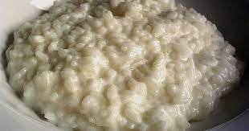

Milk Rice

Description
A step-by-step recipe on how to make milk rice.
A classic dessert that everyone loves!
Ingredients
- 2 cups short-grain rice (like Arborio)
- 6 cups water
- 4 1⁄4 cups milk
- 1 pinch salt
- 1/2 vanilla bean
- 6 tablespoons sugar (to taste)
Instructions
- Bring water to a boil in a large saucepan. Wash the rice and drain it. Add the rice to the boiling water, and cook for 5 minutes.
- In a separate saucepan, bring the milk to a boil over medium heat.
- Remove the cooked rice and drain it. Slowly drop the rice into the boiling milk. Lower the heat and add salt, vanilla bean, and sugar. Cover and simmer 15 - 20 minutes, stirring occasionally, until the milk is absorbed. Add more milk, if necessary for a tender rice.
- Serve warm, cold or room temperature - your preference.